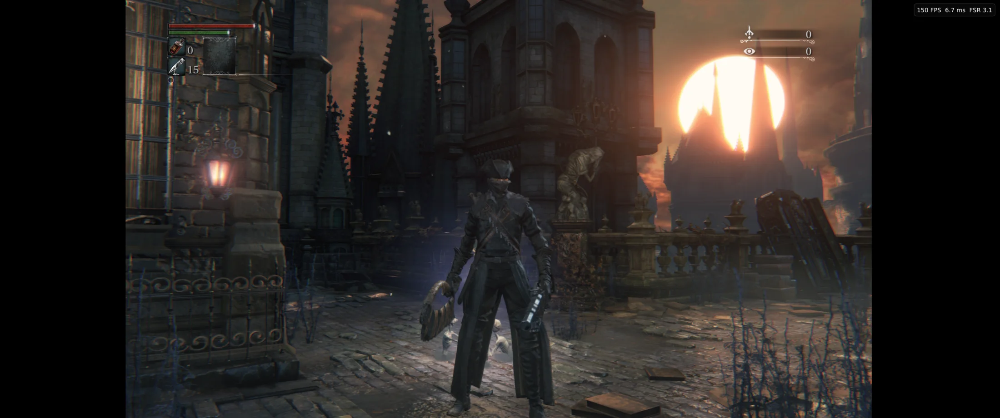

Windowsbbport 0.7 · packaged ZIP

Independent field report · 20 Nov 2026
The hunt,
translated.
A soup-to-nuts guide to running a legally dumped copy of Bloodborne 1.09 through the experimental native ports—plus the honest explanation of what “decomp,” “recomp,” and “no emulator” mean.
150 FPS in the supplied capture32:9 aspect-ratio supportBYO decrypted 1.09 dump
User-supplied capture · Bloodborne imagery © Sony Interactive Entertainment / FromSoftware
Current routesExperimental, playable
Linux / Deckbbport 0.7 · AppImage
Apple siliconbloodborne-mac 0.10.1 · DMG
Game inputclean decrypted v1.09 folder
01 · The mental model
It is a native port. It is not a source-code decomp.
Bloodborne makes the vocabulary unusually interesting. Its PlayStation 4 CPU code is already x86-64—the same instruction family used by ordinary Windows and Linux PCs. The main project builds a new world around the original executable.
✦
The useful analogy
bbport is like Wine + DXVK, built for one game.
The game’s x86-64 code executes on the CPU. A small, game-specific runtime answers the PS4 system calls Bloodborne uses. A custom graphics layer translates PS4 GPU commands and GCN shaders into Vulkan. It is narrower than an emulator and more targeted than a general compatibility layer.
Your decrypted Bloodborne 1.09 folder
eboot.bin + modules + assetsWindows / Linux · x86-64
Game CPU code→runs directly→Your CPU
The executable is converted offline into a flat memory image. PS4 C/Fios pieces are linked in; the loader maps it and jumps into the game.
Graphics · every platform
PS4 PM4 + GCN→translated→Vulkan / Metal
Draw commands become modern GPU commands. Shaders become SPIR-V on Vulkan, or Metal-compatible programs in the Apple-silicon project.
macOS · ARM64
x86-64 game code→JIT or AOT→Apple silicon
The separate Mac project translates instructions as the game runs by default, or compiles native ARM64 code ahead of time from your copy.
General-purpose
Emulation
Recreates a console broadly enough to run many games. shadPS4 loads PS4 executables, replaces system services, and translates graphics at runtime.
Machine code → machine code
Recompilation
Transforms an old binary into host-native code before or during play. The Mac fork’s optional x86-64→ARM64 ahead-of-time path is a literal example.
Recovered source
Decompilation
Humans reconstruct readable C/C++ that reproduces the old program. A decomp is source recovery—not automatically a player-ready port.
Game-specific product
Native port
Adapts one game to current OSes and APIs. “Native” describes where the work ends up; it does not mean every old-platform assumption vanished.
02 · State of the hunt
Impressive. Playable. Still experimental.
This is not a commercial PC remaster and not yet a “set it and forget it” release. Use tagged packages, keep backups, and expect hardware-specific rough edges.
Best-supported path
deadinside28/bloodborne_pc
bbport 0.7 · Windows
Windows 10/11 x86-64 package, Vulkan 1.3, WPF launcher, portable data, controller and keyboard/mouse, mods, online pools, FSR and optional DLSS paths.
Official 0.7 release ↗Steam Deck tested
Same upstream
bbport 0.7 · Linux
One-file AppImage or folder tarball. AMD/RADV and Steam Deck are the most thoroughly tested; NVIDIA and Intel rely more on player driver reports.
Official Linux downloads ↗Separate project
bloodborne-native/bloodborne-mac
bloodborne-mac 0.10.1
Apple-silicon app for macOS 15+, Metal by default, x86-64→ARM64 translation, optional AOT recompilation, and its own launcher/issues.
Official Mac release ↗Confirmed
Boot, saves, sound, input, several areas, high frame rates, ultrawide, shader cache, and player-tested co-op paths.
Not guaranteed
The bbport author has not verified a full playthrough. Hardware coverage is uneven. Mac reports measurements from very few systems.
Best practice
Keep the original dump and PS4 save as archival baselines. Do not make an experimental port your only copy.
03 · Prepare the game
One clean folder. Version 1.09.
The ports do not use a PKG directly and do not ship Sony or FromSoftware files. They expect a decrypted directory made from your own base game and its 1.09 update.
- 01
Start with your own decrypted dump.
This guide provides no ROM/PKG links, keys, firmware, or copyrighted game data. Dumping rules vary; follow your local law.
- 02
Keep originals untouched.
Make a working copy of the base-game folder. Common IDs include
CUSA03173(EU GOTY) andCUSA00900(US). Validation uses the executable, not just the name. - 03
Merge update 1.09 over the copy.
Copy everything from the decrypted 1.09 update into the base copy and replace files. This must replace
eboot.binand updatesce_sys. - 04
Check the resulting shape.
Select the folder that directly contains
eboot.bin,sce_sys/, anddvdroot_ps4/. Avoid an extra nested CUSA folder. - 05
Use a clean executable.
An old 60-FPS patch baked into
eboot.binis rejected and can crash at the gestures menu. bbport supplies its own timing hooks.
The Old Hunters
GOTY editions include it. On Windows/Linux, separate add-on dumps use user/addcont/<title-id>/<entitlement-label>/; upstream’s example is user/addcont/CUSA03173/SPEXPANSIONDLC03. The current Mac guide says separate add-on packages are not loaded, so GOTY is simplest there.
04 · Setup, soup to nuts
Pick the machine in front of you.
Windows and Linux use bbport. The Mac app is a related fork with a different architecture and support channel. Keep issue reports separate.
Recommended desktop path
bbport 0.7 for Windows
Windows 10 / 11x86-64Vulkan 1.3Current GPU driver
- 01
Update the GPU driver.
Install current AMD Adrenalin, NVIDIA GeForce, or Intel Arc drivers. The port needs Vulkan 1.3 and stops when required memory features are missing.
- 02
Download the official tagged ZIP.
From the 0.7 release, get
Bloodborne-bbport-0.7-windows-x64.zipandSHA256SUMS.Get-FileHash .\Bloodborne-bbport-0.7-windows-x64.zip -Algorithm SHA256Compare the hash with the matching
SHA256SUMSline. - 03
Extract somewhere writable.
Use a normal folder such as
C:\Games\bbport, not Program Files. StartBloodborne.exe. - 04
Select the folder with
eboot.bin.Review the detected version, press Play, and let first-run preparation finish. Do not select the ZIP or parent Downloads folder.
- 05
Establish a safe baseline.
Use monitor output resolution, 60 FPS, FSR 3.1 Quality (or native at 1080p), default effects, and no mods. Reach Central Yharnam; save, quit, and reload.
- 06
Back up the portable data.
user\has saves/cache;bbport.inisettings;out\prepared files;logs\one report per run.
Packaged Linux route
bbport 0.7 AppImage
x86-64 LinuxVulkan 1.3AMD/RADV best testedSteam Deck tested
- 01
Use a current Vulkan driver.
Current Mesa/RADV is upstream’s best-tested AMD route. NVIDIA and Intel behavior is more driver/report dependent.
- 02
Get the official AppImage and checksum.
Download
Bloodborne-bbport-0.7-x86_64.AppImageplusSHA256SUMS.sha256sum Bloodborne-bbport-0.7-x86_64.AppImage - 03
Make it executable and open it.
chmod +x Bloodborne-bbport-0.7-x86_64.AppImage ./Bloodborne-bbport-0.7-x86_64.AppImage - 04
Choose the merged 1.09 folder.
Select the directory with
eboot.bin. Packaged data defaults to~/.local/share/bbport. Let initial shaders finish. - 05
Steam Deck: add it to Steam.
In Desktop Mode add the AppImage as a non-Steam game; return to Gaming Mode and use Steam Input. Hold L3+R3 for the overlay.
- 06
Build source only when needed.
git clone --recursive https://github.com/deadinside28/bloodborne_pc.git bbport cd bbport bash build.sh BB_GAME_DIR=/path/to/CUSA03173 bash run.sh
Separate Apple-silicon project
bloodborne-mac 0.10.1
M1 or newermacOS 15+Metal defaultExperimental
- 01
Confirm Apple silicon and macOS 15+.
Intel Macs are not supported by this route. It is a separate project with its own releases and issues.
- 02
Download the official ARM64 DMG.
Get
bloodborne_mac-<version>-arm64.dmgfrom the latest release. This report verified 0.10.1. - 03
Install and approve once.
Drag Bloodborne to Applications. Control-click it and choose Open → Open, or use Privacy & Security → Open Anyway. Do not disable Gatekeeper globally.
- 04
Select the 1.09 folder and play.
The Home tab checks edition, version, and decryption. First start compiles shaders for a few minutes; later starts use cache.
- 05
Start with translator + Metal.
The x86-64 game code translates to ARM64 as it runs. Optional ahead-of-time recompilation is an advanced optimization after the default route works.
- 06
Back up the app data.
~/Library/Application Support/bloodborne_maccontains settings, saves, cache, mods, patches, andlogs/last.log. The launcher also backs up saves before each start.
05 · Tune without breaking it
Change one layer at a time.
The port exposes settings the original game never had. That is the appeal—and the fastest way to create a bad combination.
Baseline
60 FPS, default effects, one controller, no mods.
Output
Monitor, aspect ratio, resolution, cap.
Input
Per-axis camera speed, mapping, dead zone.
Reconstruct
FSR 3.1 first; optional FSR 4 or DLSS later.
Extras
Effects, online, mods and frame generation last.
Display
Unlocked timing & any aspect
4:3 through 32:9, wide cinematics, HUD placement, 30/60/90 and uncapped modes. F3 toggles a 30-FPS safety cap for problem cinematics.
Reconstruction
FSR, DLSS, AA & sharpening
FSR 3.1 needs no proprietary models. FSR 4 and DLSS have GPU, SDK, DLL, or driver requirements; unsupported choices fall back.
Input
Controller, mouse & keyboard
SDL3 pads, remapping, per-axis camera speed, direct mouse camera, pointer menus, and Souls-like keyboard defaults. F1 releases the mouse.
Preservation
Portable saves & useful logs
Backups, retained shader cache, SHA-256 sums, versioned releases, trophy records, and an input validator that checks the executable.
Modding
Overlays, patches & load order
Loose-file mods stay separate from the original dump. shadPS4-format XML patches can be toggled in the launcher. Add one, test one.
Online
Community network pools
Seamless Hunt offers BBSC co-op; The Hunter’s Dream uses Discord sign-in without BBSC. These are unofficial services, not PSN.
The supplied result
Ultrawide · 150 FPS overlay · FSR 3.1
The capture demonstrates the headline enhancements. It does not prove full-game stability; test save/reload, cinematics, bosses, and area transitions separately.
06 · Troubleshooting
Start with the first wrong assumption.
Right stick sensitivity is far too high+
Launcher Controls → Camera, or Insert / L3+R3 in game. Try horizontal 0.70 and vertical 0.55, then 0.05 steps. Keys: camera_speed_x, camera_speed_y; range 0.25–2.00. Disable duplicate Steam Input/remapper layers first.
The launcher says the game needs 1.09+
You selected base 1.00 or merged only part of the update. Copy the complete decrypted update over a working base copy, replacing eboot.bin and sce_sys.
The executable is rejected as modified+
Use a clean 1.09 eboot.bin. Old dumps may have a 60-FPS patch baked in; bbport rejects it because its own timing hooks replace that patch.
“STOP: the GPU driver cannot use the game’s memory in place”+
Update the GPU driver and reboot. 0.7 has one memory model and intentionally stops if the required Vulkan path cannot work. Report with the newest log plus exact GPU/driver versions.
First launch takes a long time or stutters+
Shader recipes compile at startup. Let the first pass finish; a repeat session should compile nothing unless the cache format changed. Keep the cache writable.
Performance fell after enabling enhancements+
Disable frame generation, use FSR 3.1 Quality or native, cap 60, restore default effects, and remove mods. Native AA can be slower than no AA.
A cinematic breaks above 30 FPS+
Press F3 for the 30-FPS safety cap. Upstream specifically calls out some cinematics, including Laurence’s, as safest at 30.
macOS blocks the app+
Control-click → Open, or Privacy & Security → Open Anyway after one attempt. Do not disable Gatekeeper globally or paste quarantine-removal commands from strangers.
A mod corrupts visuals or stops loading+
Disable all mods and XML patches, confirm clean play, then restore one at a time. Avoid emulator-specific memory patches in bbport.
07 · Beyond Bloodborne
Other ports worth knowing.
Two familiar builds—Ocarina and Symphony—show how different technical routes can arrive at the same player-facing goal. Galaxy belongs in the same map, but at a different maturity point.
Ocarina of Time
Ship of Harkinian
A mature native source port built from the Ocarina decomp: high FPS, widescreen, free-look, instant text, cutscene skips, accessibility, randomizer, mods, and online experiments.
Decomp source portPlayer-ready
Official repository ↗Symphony of the Night
SymphonyRecomp
An open-beta PS1 recomp with widescreen room extension, scaling, texture replacement, language packs, shaders, randomizer, and QoL toggles.
Static recompOpen beta
Official repository ↗Symphony of the Night
NocturneRecomp
A separate XBLA recomp for Windows, Linux, Mac, and Android, with launcher, save/mod management, randomizer hooks, native rendering, and regional assets when supplied.
Static recompMulti-platform
Official repository ↗Symphony of the Night
sotn-decomp
The matching source reconstruction for PS1, PSP, and Saturn. It is the long-term source foundation, not the same thing as a finished player app.
Matching decompIn progress
Official repository ↗Super Mario Galaxy
Nebula + Petari
Petari is the Galaxy 1 decomp foundation. Nebula began with ahead-of-time recompilation and current mainline is a native source port with modern graphics, input, saves, and mods.
Decomp + native portActive
Nebula repository ↗Majora’s Mask
Zelda 64: Recompiled
N64 static recompilation with high FPS, ultrawide, dual-analog camera, gyro aim, autosaving, low input lag, instant loads, and a friendly mod system.
Static recompPlayer-ready
Official repository ↗What these projects unlock
The quality-of-life pattern
DisplayCorrect high-FPS timing, ultrawide, integer scaling, modern AA/upscaling, HDR.
ControlRemapping, mouse look, right-stick camera, gyro, per-axis sensitivity, prompts.
FlowInstant text, intro/cutscene skips, faster loads, autosave, portable profiles.
AccessReduced flashes/wobble, UI scale, color/visibility options, alternate input.
ReplayRandomizers, practice tools, level select, speedrun presets, multiworld.
CreateMod APIs, texture replacement, load order, patch toggles, debug cameras.
08 · Primary sources
Follow the projects, not a repost.
Status and commands change quickly. These official repositories are the authority after this report’s date.
01
bbport repositoryArchitecture, requirements, controls, build/run
↗
02bbport 0.7Official Windows/Linux packages + SHA256SUMS
↗
03bbport mods & patchesOverlays, XML patches, load order
↗
04bloodborne-macApple-silicon architecture and status
↗
05bloodborne-mac releasesOfficial ARM64 DMG and known issues
↗
06Mac game-file guide1.09 merge and validation
↗
07Ship of HarkinianOcarina source-port comparison
↗
08SymphonyRecompPS1 SOTN recomp comparison
↗
ᛉTools and context.
Tools and context.
Never the game.
This guide hosts no game files, keys, firmware, SDKs, proprietary upscaler assets, or bypass tools. Use a copy you own and comply with local law. The projects are unofficial and unaffiliated with the rights holders named. Project features are linked to official repositories; the Bloodborne image was supplied by the guide’s requester.